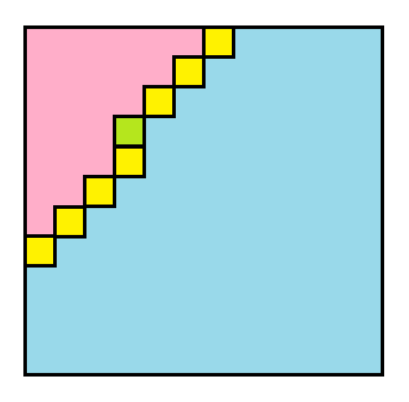
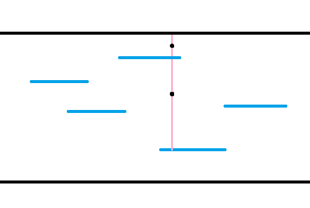

扫描线方向
ShanLunjiaJian
今天我们来谈一谈扫描线方向的问题。
Saying
ccz对扫描线的概括，摘自lxl的扫描线ppt。
这句话说的很好，但是当你尝试理解，你会感觉它好像说了什么又好像没有说（
什么是扫描线方向?
扫描线方向说的是，在解决一些有多个变量的问题的时候，我们先枚举哪一个，再枚举哪一个，每一层的枚举是从小到大还是从大到小这样的。
有些题的扫描线方向是简单的，有些是自然的，有些则违背直觉，第三种问题往往看起来是非常有趣的。
有意识地枚举扫描线方向，让我们不再需要不可靠的感觉。同时枚举扫描线方向的技巧会告诉我们，只要这个题没有什么神仙结论，枚举完所有的扫描线方向你总是可以切掉，从而为我们增添了极大的信心。面对复杂的题目时信心是非常重要的。
常见的扫描线方向
序列问题可以在序列上扫描线。树上问题可以在dfs序上扫描线，DAG上问题可以在拓扑序上扫描线，总之能转化成线性结构的都可以在上面扫描线。
在值域上扫描线。这个常常不直觉，因此我们需要有意识地枚举扫描线方向。
在时间上扫描线。这个很自然，但是有时候会显得奇怪。把时间变成空间的一维考虑问题也是常用手段，同时对静态问题的某一维进行扫描线，相当于把这一维提出来让问题变成动态的。
序列上的区间问题，可以选择扫左端点还是右端点，也可以选择从左往右还是从右往左扫。更高维空间中的问题，除了选择方向，当然要先选择按照哪一维扫。有些时候序列上的区间问题可以看成二维，有时候则是一维。
有些时候，在若干个自然地联系在一起的维度里面，我们可能会同时扫它们，也就是说沿着多个维度中的一条斜线来扫。比如有些平面问题中可以从小到大扫 $x+y$ 之类的。旋转坐标系和斜着扫描线好像是等价的。
很多dp问题，尤其是计数dp问题，需要我们考虑一个扫描线方向作为整体的转移顺序或者转移结构。但是有些结构是不能用扫描线描述的，比如 考虑第一个空位 之类的，所以说扫描线方向和dp转移结构有交，但是并没有一个包含另一个。
下面是一些例题，请大家不用想，直接秒/se
AGC016F Games on DAG
给一个DAG，有两个棋子分别在 $1,2$ 号点，Alice和Bob轮流沿有向边移动棋子，不能动就输了，求有多少生成子图使得Alice必胜。 $n\leq 15$ 。
考虑这相当于 $1,2$ 的SG值不同。转而计算相同的方案数，但是你发现SG值这东西不是很好做。
考虑在值域上扫描线，设 $dp(i,S)$ 表示 $S$ 中的点们SG值至少是 $i$ ，外面的点SG值不超过 $i-1$ 的生成子图个数，也就是说 $S$ 中的每个点都连到了SG值是 $i-1,i-2,...,0$ 的点。此时转移就是枚举SG值就是 $i$ 的点集 $T$ ， $S-T$ 中的点必须连到 $T$ 中的至少一个点，于是复杂度就是枚举子集的复杂度 $O(3^n)$ 。
洛谷省选计划2021 R4T3
给一个 $n\times m$ 的棋盘，有一些格子之间有隔板，你需要放一些骨牌，骨牌不能跨过隔板，求方案数。骨牌的形状有
$n,m\leq 20$ ，膜 $10^9+7$ 。1s，不要相信你的爆力能过。
考虑直接dp，做完了。吗?直接轮廓线的话，我们设 $dp(i,j,S)$ 表示走到 $i,j$ 这个位置，轮廓线状态是 $S$ ，转移枚举选哪一个，复杂度是 $O(2^nn^2)$ ，不是很能过 $20$ 。
考虑一个牛逼做法，我们斜着扫，也就是从左上往右下依次处理每条斜线，对于每条斜线我们再从左往右处理，状态中记录这么一段 :
呃粉色是已经决策的区域，黄色和绿色需要记入状态，蓝色还没处理，绿色是现在要处理的。
转移的时候，我们钦定放后两种块的时候一定是把中心的那个块放在当前的格子上，这样转移居然还是 $O(1)$ 的，原因是这些骨牌都是精心构造的。状态数只需要考虑前一半，后一半是一样的，它是 $\sum\limits_{i=1}^n 2^ii=O(2^nn)$ ，于是就做完了。
呃这个式子是为什么?你发现只有最后一项在起作用。
Gym100543L Outer space invaders
有一排敌人开着飞船，每个会在 $a_i$ 时刻出现，在 $b_i$ 时刻之后立刻对你开炮，而你吃不下这一炮，所以你必须在 $b_i$ 前消灭第 $i$ 个敌人。
每个敌人有一个距离 $d_i$ ，你的武器是一根棍子，它可以伸缩，如果你使用长 $l$ 的棍子，会消耗 $l$ 单位的能量，并干掉所有距离你不超过 $l$ 的敌人。求消灭所有敌人的最小消耗。 $n\leq 300,a_i,b_i,d_i\leq 10^4$ 。
考虑了几个扫描线方向，你发现按照距离扫描线是可行的。具体地，我们考虑最远的敌人，它必须被开一炮。考虑我们这一炮开出去，所有出现时间和开炮时间跨过你开炮的时间的敌人都没了，于是离散化后设 $dp(l,r)$ 表示干掉两个时间都在 $[l,r]$ 内的敌人的最小消耗，转移枚举什么时候干掉最远的敌人即可。复杂度 $O(n^3)$ 。
loj2728 joi 2015 final E. 城墙
给一个01矩阵，求其中有多少个正方形边框只包含0。$n,m\leq 4000$ ，10s。
考虑几种直接做的做法。本质上所有的爆力都是枚举了三条边，但是这里我们显然只能枚举两条，于是需要考虑枚举哪两条。
我们先枚举左边和右边，然后考虑这个正方形上下的位置。首先可以把左右边上有障碍的情况都删掉，这个怎么想都不超过4e8，随便跑了。问题变成两条横线上都不能有障碍的方案数。
讲道理，一条都不好做。诶一条好像是好做的，我们只需要从每个点出发强行往右延伸就好了。
那么现在设一个格子延伸的长度是$f(i,j)$ ，当前枚举的边长是$l$ ，我们就是要求左边$x$ 上有多少对$i,j$ 满足$f(x,i)\geq l,f(x,j)\geq l$ 之类的东西，可能还有一些$\pm 1$ 不过那不重要。
这玩意看起来像是法法塔吗?想了想你发现不行。fuck!换一个。
注意到，如果先枚举左边和下边，也就是先枚举左下角，那么剩下的两条边会形成了一个拐角的形状，而我们可以让它只剩下右上角一个变量。
我们让每个点强行往左、往下延伸，看最多延伸到哪里，这个记为$f$ 。然后枚举左下角的时候，计算往右、往上最多延伸到哪里。那么可以画个图解释一下 :

然后你发现我们要求右上角那个点的$f$ 要比它到左下角的距离更大，这个大概是什么$f(x+k,y+k)\geq k$ 之类的，移一项就变成$fx+k,y+k)-\frac{1}{2}(x+y+2k)\geq-\frac{1}{2}(x+y)$ 之类的，然后就变成在一条斜线的区间上查询比某个数大的数的个数，这完全是二维数点，扫描线BiT即可。
这个题告诉我们两个道理，一个是只要你能枚举所有的扫描线方向，肯定可以做出来；另一个是能快速减少变量数量的扫描线方向看起来会更优。
试看看!例题1.7
loj2390 joisc 2017 Day1 A. 开荒者
有一个 $r\times c$ 的矩形平原，一开始有 $n$ 个位置有草，接下来每年你可以选择上下左右之一的风向，对于每个已经有的草，它的风向方向一格处将会长一棵新的草，如果这个格子在平原外则不会发生任何事。求至少多少年可以让整片平原都是草。 $n\leq 300,r,c\leq 10^9$ ，2s。
考虑一个草长出来是啥形状，你发现它是一个矩形。如果它的长宽是 $r,c$ ，那么需要 $r+c-2$ 年让它长出来，并且风向的使用顺序是没有关系的。同时所有一开始的草在它扩展出的矩形中的位置是一样的。
$r,c$ 是1e9，于是考虑有什么技术可以减少枚举量到多项式级别。注意到最后一年一定是两个矩形相撞或者一个矩形撞上边界，于是考虑两个草要想相撞，可能的矩形位置很多，但是要么长已经确定了，要么宽已经确定了，得到了 $n^2$ 个长和 $n^2$ 个宽。最后我们选择的长宽必然分别在其中，不然减少到其中最接近的必然仍然可以。
注意到长越长，宽不会变短，于是枚举长，双指针扫宽，这样我们需要 $n^2$ 次检查一组长宽 $a,b$ 是否可行，于是要求每次检查是 $O(n)$ 的。这玩意怎么做到 $O(n)$ ?
考虑先把每个草放在它长成的矩形的左下角，我们希望能从其中找到一个 $r\times c$ 的矩形，然后希望可以做一些平移来使得所有的草都在这个矩形中的正确位置。容易感觉到然后的这一步是没有用的，也就是说如果能找到这么一个矩形，那么必然可以做这样的平移。
考虑如何证明这件事。能这么平移，当且仅当每个草在原来的矩形中的位置，贴到我们找到的这个矩形上去，恰好都在它们长出来的矩形们中。如果贴上去之后有一个不在它长出来的矩形中，那么所有的都不在它长出来的矩形，也就是说每一个点都在别的点长出来的矩形中，我们随便钦点一个这样的矩形，那么 $n$ 个点 $n$ 条边，必然会成环。而平移是整体的，所以不可能成环，除非平移量很小并且它们一开始就很接近，此时必然还是每个都在自己里面。
所以如何判断是否存在一个 $r\times c$ 的矩形?简单想法是把连续的缩起来，然后单调栈跑最大权子矩形，但是那样是 $O(n^2)$ 单次，总共是 $O(n^4)$ 。
所有的性质就是这个图形是一些 $a\times b$ 的矩形的并。然后想了很久感觉上这并不是什么好的性质，所以我们失败了。
还有什么方向?
根据刚才的考虑，我们也感觉到这个问题中有很多的维度，而其中是多项式，设上下左右的位移分别是 $a,b,c,d$ ，我们可以得到的扫描线方向是
- 扫长，也就是 $a+b$ ，这一维是 $O(n^2)$
- 扫宽，也就是 $c+d$ ，这一维是 $O(n^2)$
- 扫草在它长出矩形中横向的偏移量，也就是 $a$
- 扫纵向的偏移量，也就是 $c$
三个显然的方向是扫前两个，或者扫第一个和第三个，或者扫第一个和第四个。第一种我们刚做了，于是考虑第二种。
还是转成要能找到一个 $r\times c$ 的矩形。
考虑我们不允许在纵向上的平移，也就是说固定纵向的位置是正确的，然后考虑横向的位置摆在哪里。扫完长之后，我们得到了若干条横线，每个横线会向上下扩展，于是这个情况看起来是这样的 :
考虑每个点需要上下的蓝线扩展来覆盖它，于是如果上下都有线，这构成了一个对上下之和的限制，否则构成了对上下之一的限制，这些限制结合起来是充要的，于是最小的宽就是某些东西的 $\max$ 。考虑我们处理每一列，把相邻的相同列缩成一段，用单调队列维护。枚举过程中蓝线会向右伸长，于是会有 $n^2$ 次一段的消失，我们直接爆力维护这些消失，每次去更新这一列的信息即可，单调队列扫一遍是 $O(n)$ ，更新是也 $O(n)$ ，总共是 $O(n^3)$ ，这就做完了。
刚才我们提到了三种方向，但是第三种实际上是显然没有前途的，因为枚举了长之后，上下移动量的枚举量是$O(n^3)$。所以第三种可以直接击毙了。
如果你问为什么不扫第三个和第四个，是因为两个的总枚举量是$O(n^6)$。
Powered by reveal.js